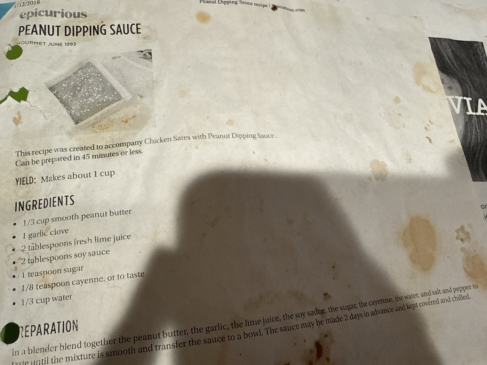

Peanut Dipping Sauce

A quick blender sauce built on peanut butter, garlic, and lime, with soy sauce for salt and a touch of cayenne for heat. Originally created to go with chicken sates, it's just as good as a dip for vegetables, spring rolls, or grilled tofu. Ready in well under 45 minutes.
~1 cupyield
<45 mintotal time
Vegandiet
Ingredients
- ⅓ cup smooth peanut butter
- 1 garlic clove
- 2 tbsp fresh lime juice
- 2 tbsp soy sauce
- 1 tsp sugar
- ⅛ tsp cayenne, or to taste
- ⅓ cup water
- Salt and pepper, to taste
Method
- Blend. In a blender, blend together the peanut butter, garlic, lime juice, soy sauce, sugar, cayenne, water, and salt and pepper to taste until smooth. Transfer the sauce to a bowl.
Make ahead: the sauce may be made 2 days in advance and kept covered and chilled.
Original pairing: this recipe was created to accompany Chicken Sates with Peanut Dipping Sauce — skip the chicken and use it as a dip or tofu marinade instead.